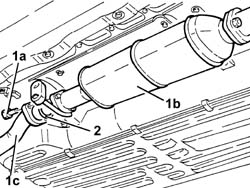

1076B36 cat rear sealing ring - replace
- Path
- Procedures > 10 ENGINE > 1076 EXHAUST PIPES AND SILENCERS > 1076B exhaust pipes and silencers > 1076B36 cat rear sealing ring - replace
- Kind
- repair procedure (removal / refitting; the operation number is the code)
- Applies to
- engines: 1.6 TS , 1.8 TS, 2.5 V6, 1.9 JTD 8v , 2.4 JTD 10v; all production periods
- Interactive page
- https://sloeber94.github.io/elrnDB-a156/en/#/3237572
Applies to: engines: 2.5 V6; all production periods
 Removing
Removing
 Refitting
RefittingApplies to: engines: 2.5 V6; all production periods
Refitting
RemovingFit a new rear catalytic converter seal.
Applies to: engines: 1.6 TS , 1.8 TS; all production periods
Applies to: engines: 1.9 JTD 8v , 2.4 JTD 10v; all production periods
Removing
Refitting1. Undo bolts (1a) and disconnect catalytic converter (1b) from rigid pipe (1c).
2. Remove the seal.

Applies to: engines: 1.9 JTD 8v , 2.4 JTD 10v; all production periods
Refitting
RemovingFit a new sealing ring, then tighten the bolts securing the catalytic converter to the rear rigid pipe to the specified torque.
 | Fastening | Component | Ø | Value (daNm) |
|---|---|---|---|---|
- | Bolt | CATALYTIC CONVERTER (ONE) | M8 | 2.0 - 2.5 |